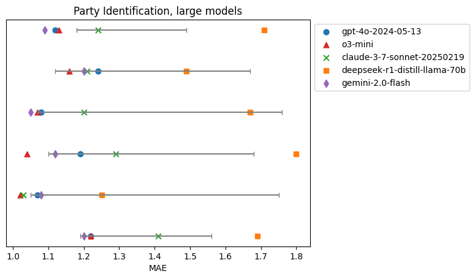
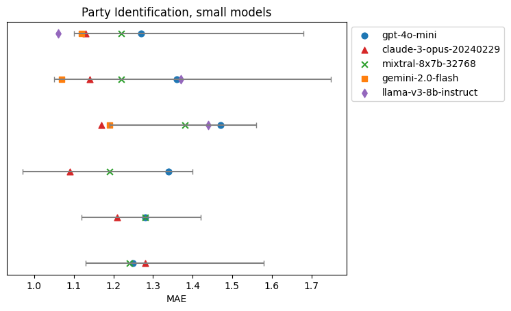
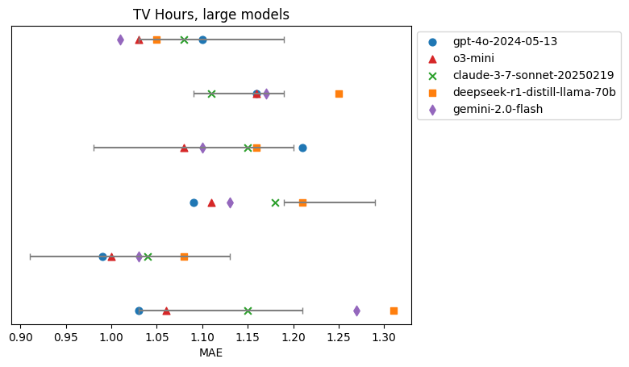
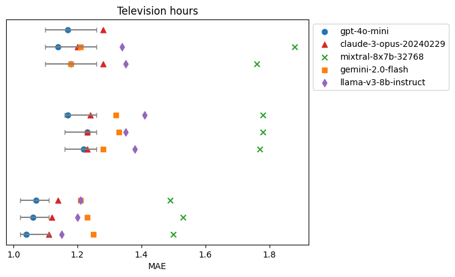

How Realistic Are Synthetic Consumers?

Evaluating LLMs on Political and Lifestyle Choices
Synthetic consumers based on large language models (LLMs) have potential to make market research and marketing faster and less expensive, but only if their responses are consistent with real consumers in the target market.
To see whether they are, the ideal experiment is to compare synthetic consumers with a panel of human beings – and at PyMC Labs, we are working with clients to do just that. But those experiments target specific markets that might not generalize, and the datasets are proprietary. So, in order to generate results we can share more widely, we are undertaking a series of experiments to test synthetic consumers using public datasets and more general questions.
We’ll start with the General Social Survey, which samples adult residents of the United States and asks questions about their attitudes and beliefs on a variety of topics. The responses are categorical, so they lend themselves to quantitative evaluation. In a future experiment we’ll look at another survey that includes open-ended text responses.
Party Identification
The first question we’ll consider asks about political party identification: “Generally speaking, do you think of yourself as a Republican, Democrat, Independent, or what?” The responses are on a seven point scale from “Strong Democrat” to “Strong Republican”. We selected this question in part because choosing a political party is arguably analogous to a consumer choice, and because we expect the responses to be moderately predictable.
To see whether the responses we get from synthetic consumers are consistent with real people, we randomly selected from the 2022 GSS a test set of 100 respondents. For each respondent, we collected demographic information including age, sex, race, education income, occupation, and religious preference, as well as responses to the following question about political alignment, “Where would you place yourself on a seven-point scale on which the political views that people might hold are arranged from extremely liberal--point 1--to extremely conservative--point 7”
To test synthetic consumers, we composed a prompt with three elements:
- Instructions for the LLM to adopt the role of a person with the given characteristics,
- The text of the GSS question about party identification (quoted above), and
- Instructions to respond with one of the labels on the seven-point scale.
Then we parse the responses to identify the label predicted by the LLM. To evaluate the responses, we treat the seven-point scale as numerical and compute the mean absolute error (MAE), averaged across the respondents in the test set.
We compare the results from the synthetic consumers to two alternatives:
- A random forest regressor trained with data from 3000 respondents, and
- A baseline classifier that always guesses the median value.
If synthetic consumers accurately reflect real-world demographic relationships between demographics and party identification, their responses should outperform the naive baseline. However, because they rely only on implicit statistical associations on an external dataset (the internet) we expect their accuracy to fall short of supervised models like random forests trained specifically on this data. Although this comparison is somewhat unfair—akin to evaluating an unsupervised against a supervised method— it is helpful to contextualize the accuracy of this approach. Ultimately, the key advantage of synthetic consumers is their ability to answer novel questions immediately, without additional training.
Preliminary Results
In our first experiment, we tested synthetic consumers based on five readily available LLMs: GPT-4o, GPT-o3-mini, Claude 3.7 Sonnet, DeepSeek R1 Distill, and Gemini 2.0 Flash. The following figure shows the results.

Each line represents a run with a different random seed, which controls the selection of the training and test sets. The gray lines show the range between the performance of the baseline classifier (on the right) and the random forest (on the left). The markers show the performance of synthetic consumers with the same prompt submitted to different LLMs.
The performance of most models is good, often comparable to the random forest model. GPT-o3-mini and Gemini 2.0 Flash are the most consistent, sometimes performing better than the random forest. DeepSeek Distill is consistently the worst of these models and sometimes worse than the baseline. It is a smaller model than the others, which might account for the difference.
To see whether smaller models generally perform worse, we also tested GPT-4o mini, Claude 3 Opus, Mixtral 8x7b, and Meta Llama 3 8b Instruct. The following figure shows the results. Gemini 2.0 Flash is included again for comparison. Note that not all LLMs are included on the bottom three lines.

Some of these models perform better than others – Claude generally does well, GPT and Llama are not as good. However, even with smaller models, in many cases, the performance of the best LLM is comparable to that of the random forest.Finally, to confirm that the demographic information included in the prompt informs the responses, we ran the same test with a generic prompt that did not include demographic information. The results were consistently bad and often worse than the baseline. We conclude that LLMs represent statistically valid information about the relationships between demographic variables, political alignment, and choice of political parties. To the degree that party affiliation is analogous to a consumer choice, these results suggest that LLMs can be accurate models of consumers.
Television Hours
As a second example, we tested a question we expect to be less predictable: “On the average day, about how many hours do you personally watch television?" We grouped responses into five categories: "one or less", "two hours", "three hours", "four or five hours", "six or more hours".
The prompt we constructed contains the same demographic information as in the previous experiment, the question text from the GSS, and the five categorical responses. Again, we parsed the responses, compared to the real respondents, and computed the mean absolute error (MAE). The following figure shows the results from the larger LLMS.

Again, the gray lines show the range between the performance of the baseline classifier and the random forest. The MAE for the baseline is smaller than in the previous experiment because there are only five categories. The range between the baseline and the random forest is smaller because the prediction task is harder and the data available for training is smaller (2000 respondents).
The performance of the LLMs is usually in the range between the baseline and the random forest, but occasionally better than the random forest or worse than the baseline. Notably, none of the models are consistently better or worse than the others. But in most cases at least one of the models is comparable to the random forest.
Here are the results with the smaller models. This experiment includes three runs with each of three random seeds.

In some cases the smaller models perform well, with MAE somewhere between the baseline and the random forest, but in several cases the results are worse than the baseline. Mixtral does particularly badly – we have not yet dug into the results to see why. GPT-4o-mini does relatively well at this task, in contrast to the previous experiment. So it’s noteworthy that the relative performance of different LLMs varies from one task to another.
Conclusions
Based on the experiments so far, it looks like synthetic consumers based on LLMs have a lot of potential. On some tasks, their performance is comparable to a machine learning algorithm with a large training set. Some LLMs perform better than others – but not always the same ones – which suggests that an ensemble algorithm that combines responses from multiple LLMs might perform better than any of them alone. We will investigate this in future experiments – so stay tuned for more blogs about this topic!
However, on some tasks, LLMs can perform worse than a naive baseline. As a next step, we plan to look more closely at these cases to see if they can be mitigated. Also, in a future post, we will present experiments with a dataset that includes open-ended text responses – a task that makes better use of the unique capabilities of LLMs.
Work with PyMC Labs
If you are interested in seeing what we at PyMC Labs can do for you, then please email info@pymc-labs.com. We work with companies at a variety of scales and with varying levels of existing modeling capacity. We also run corporate workshop training events and can provide sessions ranging from introduction to Bayes to more advanced topics.